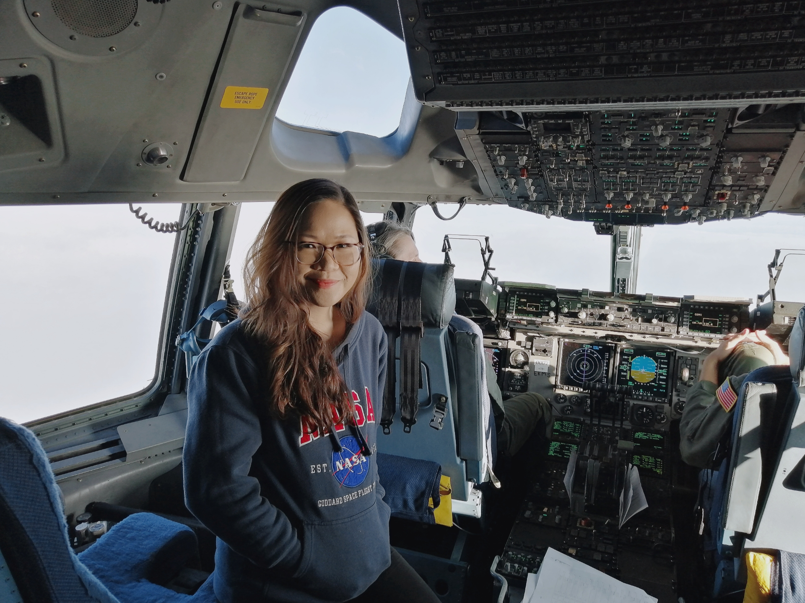

Cynthia Garcia-Eidell (Sin-thee-yah Gar-see-yah Eye-del) is a Knauss Marine Policy Fellow supporting the Global Ocean Monitoring and Observing program at the National Oceanic and Atmospheric Administration (NOAA). She is also a Ph.D. candidate in Earth and Environmental Sciences at the University of Illinois, Chicago. She is interested in carbon cycle changes along critical fringes of our planet — coastal margins and marginal ice zones — using satellite datasets. She holds an M.Eng. in Environmental Engineering from the Catholic University of Korea and a B.S. in Biology from the University of the Philippines. She was previously appointed as a Visiting Scientist at the NASA Goddard Space Flight Center.
Learn more about Cynthia's STEM journey through her conversation with our Education and Research Fellow, Swastika Issar:
Let's begin by talking about where you grew up.
I grew up in Amadeo, Cavite — fondly known as the "Coffee Capital of the Philippines." We have the largest surface area covered by coffee. In summer, you can smell the mild sweetness of the coffee flowers and the whole town becomes fragrant. After harvesting, the streets of our town are covered with coffee cherries in all shades of red, green and brown at different stages of drying. The fruit is raked and turned throughout the day to help with the drying process.
Amadeo is in the highlands, so we had colder weather, lots of rain and lots of tropical fruit. A lot of my sensory stimuli growing up had to do with coffee. It's a beautiful place.
What was your childhood like?
I really enjoyed growing up in our town. I'm the youngest of three siblings. My mom was a retired elementary school teacher and my dad a retired police officer. We are a family of educators and civil servants — my grandparents, my sister, and my aunt are all teachers. My brother is an engineer.
I grew up in an environment where education was very important. For my parents, displaying the diploma of their kids in our house was their biggest pride. Our parents wanted us to be well rounded. All three of us had to pick a sport and a musical instrument. My sport was taekwondo. I started early and did it until high school. For my musical instrument, I played the flute and guitar.
Traveling was another big component of our growth and upbringing. We were highly encouraged to travel, explore, and expand our horizons.
Were there any subjects you particularly loved?
My mom taught Filipino language and grammar in school and I loved listening to her recite poems. I really gravitated towards Filipino grammar, the history of our language, and poetry when I was younger. I think our language is really beautiful. Then I discovered science in Grade Four and Five. I was a really curious kid who always asked a lot of questions. Our science teacher was amazing — she invested so much time in making learning interesting, in showing us how things worked instead of just telling us. We'd do experiments and hands-on activities. That hooked me.
How did you end up studying the ocean from space?
My path wasn't a straight line. I started with biology at UP, then did environmental engineering in Korea, and eventually landed at NASA Goddard working with satellite data. What I love about remote sensing and satellite oceanography is that you can study some of the most remote, inaccessible places on Earth — like the Arctic Ocean — from a computer. I'm currently studying how the carbon cycle is changing in coastal and ice-edge environments, which are some of the most sensitive indicators of climate change.
There's also something deeply moving about being a Filipino woman working on global climate questions. The Philippines is one of the countries most vulnerable to climate change — to sea level rise, to stronger typhoons, to ocean warming. Being able to contribute scientifically to understanding these changes feels like both a responsibility and an honor.
What advice would you give to young Filipino students interested in science?
Be curious. Follow your nose. My path took me from the Philippines to Korea to the United States to Greenland — and it has been richer for being unexpected. Don't be afraid to go to places where you're the only Filipino in the room, or the only woman. Bring your whole self. Your perspective as a Filipino scientist is valuable and needed.
And build your network. Find people who look like you and who are doing things you admire. There is a growing community of Filipino scientists globally, and that community can be a tremendous source of support and inspiration.
More from the Filipinas in STEM series:
- Cassidy Childs — Climate Policy and Filipino Roots
- Faye Romero — Evolutionary Biologist
- Janneli Lea A. Soria — Geologist and Science Educator
- Reinabelle Reyes — Data Science, Physics & Community
- Iris Bea Ramiro — Cone Snails, Copenhagen & Beyond
- Ariane Peralta — Microbiologist, East Carolina University
- Hyacinth Suarez — Marine Biologist, Bohol